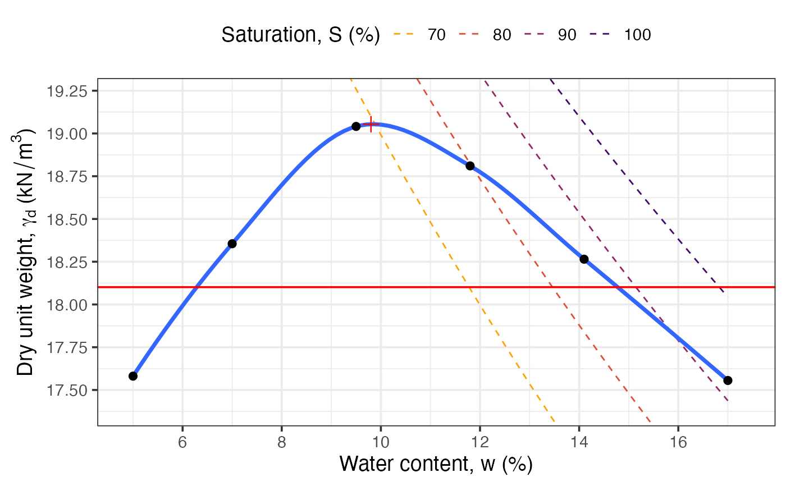
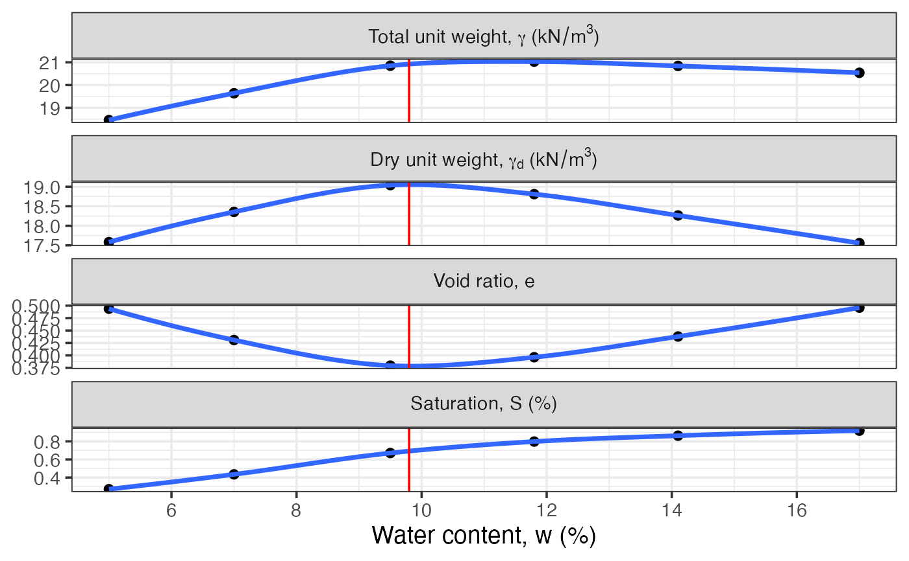
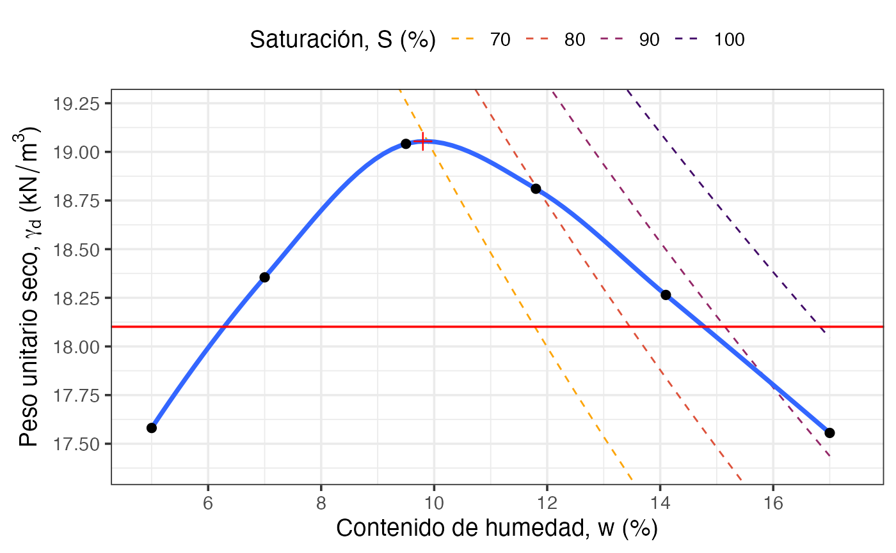

Analyses results from a standard or modified Proctor compaction test. Fits a LOESS curve to find optimum moisture content and maximum dry unit weight, builds zero-air-void (ZAV) lines for selected saturation levels, and returns summary statistics plus two diagnostic plots.
Arguments
- w
Numeric vector. Water content values (percent) measured in the test.
- gamma
Numeric vector. Moist unit weight values (kN/m³) corresponding to each
wvalue. Must be the same length asw.- Gs
Numeric scalar. Specific gravity of soil solids. Default is
2.68.- S_lines
Numeric vector. Saturation levels (percent) for which ZAV lines are drawn on the compaction curve plot. Default is
c(70, 80, 90, 100).- target_compaction
Numeric scalar. Relative compaction target as a proportion (e.g.
0.95for 95 percent). Used to draw the reference horizontal line on the compaction curve. Default is0.95.- lang
Character scalar. Language for plot labels. Either
"en"(default) for English or"es"for Spanish.
Value
A list with:
proctorTibble with the input data plus computed
gamma_d, void ratioe, and degree of saturationSfor each test point.optimumOne-row tibble with the optimum water content (
w) and maximum dry unit weight (gamma_d) obtained from the LOESS fit.opt_propertiesTibble with LOESS-predicted values of
gamma,gamma_d,e, andSat the optimum water content.compaction_plotA
ggplot2object showing the compaction curve, ZAV lines, optimum point, and thetarget_compactionreference line.properties_plotA faceted
ggplot2object showing howgamma,gamma_d,e, andSvary with water content.
See also
Other soil mechanics:
Casagrande_LL(),
DS_plot(),
Mohr_Circle(),
bearing_capacity(),
fallcone_limits(),
induced_stress(),
insitu_stress(),
particle_size_graph()
Examples
w <- c(5, 7, 9.5, 11.8, 14.1, 17)
gamma <- c(18.46, 19.64, 20.85, 21.03, 20.84, 20.54)
res <- compaction_test(w, gamma, Gs = 2.68)
res$optimum
#> # A tibble: 1 × 2
#> w gamma_d
#> <dbl> <dbl>
#> 1 9.8 19.1
res$compaction_plot
#> `geom_smooth()` using method = 'loess' and formula = 'y ~ x'

res$properties_plot
#> `geom_smooth()` using method = 'loess' and formula = 'y ~ x'

# Spanish labels
res_es <- compaction_test(w, gamma, Gs = 2.68, lang = "es")
res_es$compaction_plot
#> `geom_smooth()` using method = 'loess' and formula = 'y ~ x'
